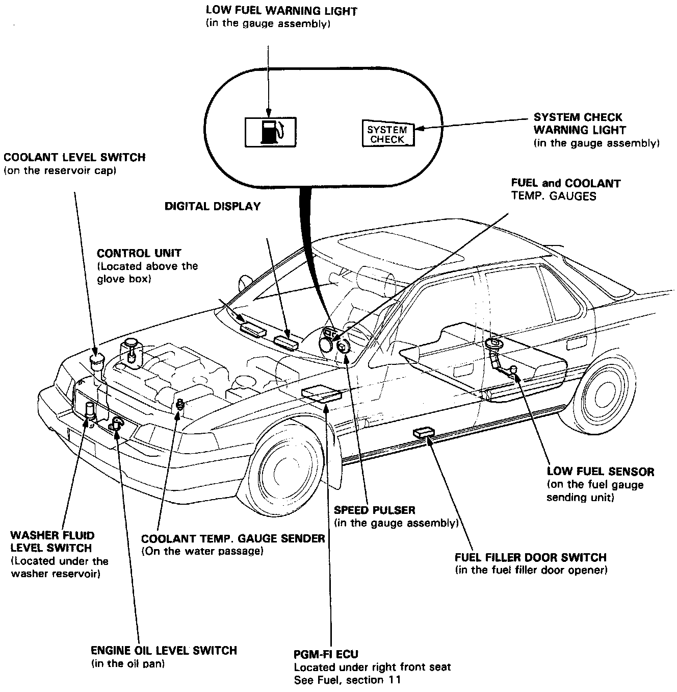

Maintenance Required Lamp/Indicator: Locations

SRS wire harness is routed near the information system related parts (SRS wire harness locations. All SRS wire harness and connectors are colored yellow. Do not use electrical test equipment on these circuit.
CAUTION: Be careful not to damage SRS wire harness when servicing the information system.